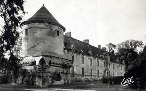
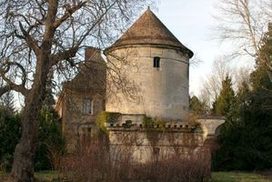
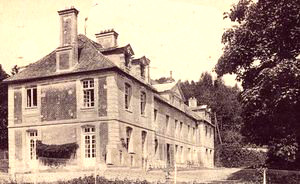
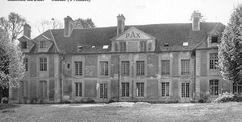
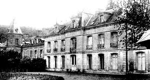

Recensement Jean-Claude Truffet
| Département | 78 — Yvelines |
| Canton | Aubergenville |
| Commune | Maule |
| Type d'édifice | Château |
| Période d'origine | XVI-XVII XVIII-XIX |





trois châteaux dans cet article; Agnou, Buat et Rolanderie. AGNOU, la construction du château d'Agnou a débuté dans la denière décennie du XVIe siècle, vers 1594. Il a fallu d'abord assainir et remblayer l'ancien marais du bout d'Agnou, en bordure de la Mauldre. Nicolas Harlay de Sancy, baron de Maule, avait mis sa fortune et ses talents au service du roi Henry IV. Son projet était ambitieux. Il voulait bâtir un immense quadrilatère flanqué de quatre tours rondes. Par son mariage avec Marie Moreau le 15 février 1575, Nicolas de Harlay fait l'acquisition de la terre de Grosbois en 1596 où il entreprend la construction d'un autre château en 1597, pouvant expliquer l'inachèvement d'Agnou. Les héritiers du baron et de sa femme Marie Moreau ne pourront conserver la propriété. Il sera vendu en 1638 à Claude de Bullion, surintendant des finances et garde des sceaux. A la Révolution, il appartiendra au marquis de Boisse qui devra s'éxiler. Les révolutionnaires mutileront le château dont les restes seront vendus en 1793 à Nicolas-François Fréret et finalement récupéré par le marquis de Boisse en 1812. Il appartient au XIXe siècle à la famille de Maule Plainval, et en 1876, aux Balagny. Transformé en hospice lors de la première guerre mondiale, occupé par la Wehrmacht durant la deuxième guerre mondiale, il sera abandonné dans les années 1960. Sauvé par ses nouveaux propriétaires dans les années 1970, il retrouve peu à peu son image du XVIe siècle. Éléments protégés MH : les façades et les toitures du château et de la tour aménagée en colombier : classement par arrêté du 31 juillet 1979.
BUAT, construit en 1730, de style Louis XV, sur les vestiges d'une ancienne porte de la ville fortifiée de Maule, la porte du Buat, qui était la quatrième qui longeait la propriété de l'hostellerie du Dauphin. Le fief du Buat est offert au monastère en 1366, par Jacques du Buat, chanoine de Saint-Paul à Saint-Denis et, en échange, le prieur avait l'obligation de dire une messe de requiem dans l'église une fois par semaine. La propriété est cédée par les moines, en 1491, à Thomas Morise, manoeuvrier. En 1664, le domaine est transmis au Sieur Pernot par un bail emphytéotique de 60 ans. Cet homme était Grand valet de pied du roi sous Louis XIV. A sa mort, sa veuve hérita du fief. Le château, appelé à l'époque Maison Rouge, fut bâti par les enfants Pernot en 1730. Il se transmit successivement de génération en génération par les femmes de la famille. Au début du XXe siècle, l'une d'entre elles cède le château à une congrégation de religieuses bénédictines. Création en 1951 par la mère supérieure et M. Corcoral, d'un lycée agricole privé, le ministère de l'agriculture donnant son agrément. accueille aujourd'hui un lycée agricole. ROLANDERIE, date du XVIIIe siècle. Au XIXe siècle, Rudolph Meyer, un canadien est régisseur du château qui, d'ailleurs, prendra le nom d'une colonie dans la Saskatchewan. Henri Lorin, catholique français engagé au sein du catholicisme social, a vécu dans ce château qu'il acheta après son mariage en 1891. St VINCENT pas d'historique.
Agnou; Nicolas Harlay de Sancy Buat ; Jacques du Buat Rolandière ; Rudolph Meyer"
Deux châteaux dans cet article; Agnou grav-1-2 et Buat gra v-3-4 et Rolanderie grav 5 gps 48° 54' 17? N, 1° 50' 50? E